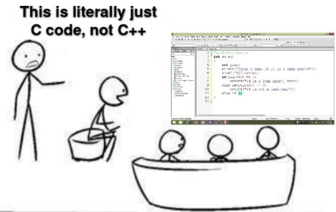
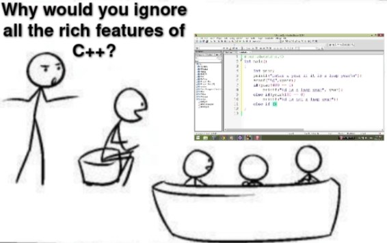
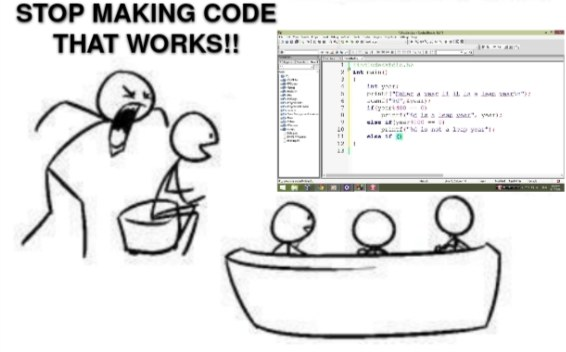

Последние пару-тройку лет на конференциях все чаще я слышу жалобы знакомых в игрострое о том, что текущий вектор развития «современного C++» не соответствует потребностям игровой разработки. Реальные полезные нововведения фактически закончились с выходом C++17, а попытки внедрить C++20 часто заканчиваются обнаружением множества «гейзенбагов» и существенным снижением производительности — критичные для нас на 10–15% от сборки к сборке. Пошатавшись по разным игровым студиям, блин, скоро будет 15 лет как я тут, у меня таки немножечко есть, что вам рассказать.
Все современные студии, что крупнее двух с половиной землекопов, пишущие игры на плюсах, шарпе или чём-то близком — используют Visual Studio или переходят со своих поделок на Unreal/Unity, который так-то тоже плюсы, хоть и со странностями. Так исторически сложилось, что винда и майки были, есть и в ближайшем будущем горизонта лет десяти останутся самым крупным рынком ПК-консольных игр, а сами консоли давно стали «ну совсем ПК», но чтобы не терять эксклюзивы (и шекели) вендоры в этом не признаются никогда.
Мобилки, как бы отдельно и там свои покемоны Mac с Android, но в Visual Studio в том или ином виде создаются, дебажатся и оптимайзятся 95% игр, остальное — погрешность. С момента начала золотой эры игростроя (где-то в конце 90-х), большинство игр писались с учётом того, что они будут выпущены на ПК, под ПК понимается — под винду. И наследие многих A+-студий так или иначе связано с Microsoft, даже для не-Microsoft консолей и мобилок.
На данный момент Visual Studio — лучший отладчик C++ в мире, с непревзойдённой возможностью прикрутить, распарсить и отобразить практически всё, что придёт вам на ум, а если не хватает студии, можно открыть WinDbg, который ещё и программировать себя позволяет. Отладка — это то, за что, в принципе, многие пользуются студией и готовы мириться с приколами компилятора, слабой оптимизацией, глючной STL и прочими багами.
Недавно Microsoft прикрутила таймлапс-отладчик и вообще даёт кучу возможностей во всём, что касается плюсов, если вы, конечно, работаете на Windows, начиная от кастомных символьных серверов до распределённой сборки и скриптов компилятора, и заканчивая тем, что билды под плойку (FreeBSD система, кстати) не умеют собираться вне виндового SDK. Ну т.е. сдк под линь есть, но не совсем рабочие, надо танцевать с бубном как в старые добрые, и не факт что заведётся, а вопросы на форуме в ветке про линух, неделями лежат несмотренные саппортом. С nintendo (musl система) такая же фигня, у них всегда sdk свежие, но фиг вы соберёте билд на свич из-под линукса. Как вам уровень троллинга? И когда вы привыкли иметь это всё под рукой: переходить с лыж на костыли и ручную пилу (отладку в консоли) вместо «Дружбы» (студийного отладчика) очень не хочется.
Семнадцатые плюсы почти без проблем были подхвачены разработчиками, но вот с революцией двадцатых и более поздних стандартов что-то не получается. Мне очень нравится в C++11 и наследниках скорость сборки и строгая типизация. Строгая типизация, безусловно, является особенностью недавней эволюции плюсов, когда мы увидели огромное расширение системы трейтов, такие вещи, как nullptr и scoped enums для борьбы с наследием легаси кода доколумбовой эпохи, но в нагрузку добавили auto. Это конечно круто, но auto замедляет сборку.
void vector<_TYPE_>::preallocate(const size_t count) {
if (count> m_capacity) { // 0.000032s
_TYPE_ * const data = static_cast<_TYPE_*>
(malloc(sizeof(_TYPE_) * count)); // 0.000087s
const size_t end = m_size; // 0.000023s
m_size = std::min(m_size, count); // 0.000342s
for (size_t i = 0; i < count; i++) { // 0.000038s
new (&data[i]) _TYPE_(std::move(m_data[i])); // 0.000135s
}А вот так с auto в три, почти три, раза увеличивается время компиляции отдельных выражений в которых присутствует автоматическое выведение типа. Много ли auto у вас в проекте? Я просто поставил авто, вместо типов.
void vector<_TYPE_>::preallocate(const size_t count) {
if (count> m_capacity) { // 0.000030s
auto data = static_cast<_TYPE_*>
(malloc(sizeof(_TYPE_) * count)); // 0.000195s <<<<<<<<<<<
const auto end = m_size; // 0.000062s <<<<<<<<<<<
m_size = std::min(m_size, count); // 0.000452s <<<<<<<<<<<
for (size_t i = 0; i < count; i++) { // 0.000042s
new (&data[i]) _TYPE_(std::move(m_data[i])); // 0.000258s <<<<<<<<<<<
}И тут мне очень начинают не нравиться люди, которым нравится стиль almost-always-auto. Независимо от того насколько хорошо обосновано применение auto, он просто медленнее, а ещё влияет на время компиляции выражений, где участвует, и не в лучшую сторону.
Но при включении C++20, всё становится ещё хуже, вот те примеры были под C++14/17, там время плавало в пределах 2-3% погрешности, а теперь посмотрите на это. Просто из ниоткуда +10/15% на компиляции того же самого кода.
Как посмотреть выхлоп компилятора для конкретного участка кода (MSVC)
/Bt+ — сообщает время компиляции front и back части компилятора для каждого файла. C1XX.dll — это front часть компилятора, которая отвечает за компиляцию исходного кода в промежуточный язык (IL). Время компиляции на этом этапе обычно зависит от времени работы препроцессора (включения, шаблоны и т.д.). C2.dll — это back часть компилятора, которая генерирует объектные файлы (преобразует IL в машинный код).
/d1reportTime — сообщает время работы front части компилятора, доступно только в Visual Studio 2017 Community или более новых версиях.
/d2cgsummary — сообщает о функциях, которые имеют «аномальные» времена компиляции. Это полезно, попробуйте использовать.
void vector<_TYPE_>::preallocate(const size_t count) {
if (count> m_capacity) { // 0.000038s <<<<<<<<<
auto data = static_cast<_TYPE_*>
(malloc(sizeof(_TYPE_) * count)); // 0.000223s <<<<<<<<<<<
const auto end = m_size; // 0.000074s <<<<<<<<<<<
m_size = std::min(m_size, count); // 0.000509s <<<<<<<<<<<
for (size_t i = 0; i < count; i++) { // 0.000054s <<<<<<<<<<<
new (&data[i]) _TYPE_(std::move(m_data[i])); // 0.000302s <<<<<<<<<<<
}https://godbolt.org/z/TMEbxEGG6 (C++14)
Top 3 (top-level only):
Z:\compilers\msvc\14.41.33923-14.41.33923.0\include\vector: 0.175865s
Z:\compilers\msvc\14.41.33923-14.41.33923.0\include\cstdio: 0.040779s
Z:\compilers\msvc\14.41.33923-14.41.33923.0\include\cstdint: 0.013023shttps://godbolt.org/z/q5nva67qo (C++20)
Top 3 (top-level only):
Z:\compilers\msvc\14.41.33923-14.41.33923.0\include\vector: 0.250358s
Z:\compilers\msvc\14.41.33923-14.41.33923.0\include\cstdio: 0.057683s
Z:\compilers\msvc\14.41.33923-14.41.33923.0\include\cstdint: 0.018684sЧто касается строгой типизации, там не всё так плохо. Она конечно медленнее простых типов, но вполне прижилась и активно внедряется большинством студий, которые заинтересованы в улучшении качества использования C++ и если вы готовы немного поступиться скоростью сборки кода, тогда строгие типы вам в помощь.
Можно забить на время компиляции, работая в не-игровой компании с хорошей внутренней инфраструктурой билдферм и потенциально бесконечной вычислительной мощностью для компиляции любого кода, который вы только можете написать своими трёхэтажными шаблонами. Но крупным компаниям тоже не сладко, их десятиэтажные шаблоны, кодогенерация и рефлексия отжирает столько, что время компиляции начинает превращаться в реальные баксы на железе — отсюда и модули — да, я тут может скажу крамольную мысль, но модули и всё рукоблудие вокруг них было нужно большим конторам, и они это протолкнули в стандарт.
В плане игродева отдельным студиям и сологероям это нафиг не уперлось, у инди банально не будет фермы для сборки, а всё собирается либо на GitHub Actions, либо проект уже подрос и есть что-то вроде IncrediBuild и своей минифермы, ну так те 15-20 минут для сборки чинятся разными хаками и прямыми руками лида. Модули в текущем состоянии замедляют или не меняют время сборки большого проекта, если вообще работают, но требуют новых людей для саппорта. Разработчик игр про модули слышит либо на конференциях, либо от «продаванов модулей» на позицию мидла на собесах.
Можно немного поспорить об относительной стоимости времени компиляции и оборудования по сравнению со стоимостью времени программиста, и могу сказать, что оборудование является самым дешёвым ресурсом, который вы можете купить за деньги, но... тут всегда есть очередное НО.
Но оборудование — это реальные деньги, которые приходится просить у начальства, а время найма, разработки, размываются на какой-то более поздний период времени. И многим седым девочкам-бухгалтерам трудно сделать этот выбор, потому что за убитых енотов отчитаться надо здесь и сейчас, а код, девопс и игра — они потом, через месяц, а то и вообще в конце налогового периода. И руководство компании практически всегда видит только оптимизацию текущей выгоды. Т.е. когда ты приходишь к руководству и просишь денег на то, чтобы игра собиралась медленнее, на тебя смотрят с улыбкой.
Следующей статьёй расходов после железа идут тулы, их надо много, как можно больше инструментов — предупреждения, статический анализ, санитайзеры, инструменты динамического анализа, профайлеры и т.д. Всё что есть на рынке от Cppcheck до PVS и SonarCube используются где возможно, потому что найденный на этапе компиляции или тестов баг — это сэкономленное время, которое можно потратить на разработку. Да вот беда, все эти инструменты хорошо работают на не-Microsoft платформах, линуксах и прочих маках — как вы понимаете, это очень нетипично для разработки игр.

При чём тут тулы и современный C++? Так или иначе все эти инструменты хорошо работают со стандартным и более-менее современным C++, их обновляют под новые фичи и возможности языка, иначе их никто не купит, а старые стандарты либо просто поддерживают чтобы не сломались, либо вообще забивают. Поэтому когда ты приходишь и просишь денег на новые тулы, которые должны сапортить новые фичи, которые не используются, на тебя смотрят с улыбкой.
Но да ладно, опенсорс тулы — их ещё можно причесать и завести на винде, с теми — кто хотят денег договориться о портировании, но большая часть этих инструментов ориентирована на работу со стандартным C++, а... а у нас он нестандартный. Там есть готовая поддержка для std::vector, но я его не использую, потому что у меня свой собственный static_vector/doble_ended_vector/small_vector/buffered_vector/hybrid_vector/onstack_vector живёт, с преферансом и дамами, кастомным алокатором и не менее кастомными итераторами, и эти инструменты не умеют его проверять. Их нельзя винить за это, они также сделаны, чтобы зарабатывать шекели и кровавый энтрепрайз платит намного больше всех AAA студий вместе взятых.
Про CI
А ещё настройка и поддержка CI-пайплайна, который запускает эти инструменты, требует инженеров по сборке, а с этим бывают проблемы, потому что найм людей на неигровые инженерные должности — это системная боль всей индустрии, я могу продавить своего лида, чтобы взял парочку мидлов мне в помощь, да только он не может продавить своего начальника, чтобы взять нам в отдел ещё одного полноценного помидора QA, в половину мидловской зп, не говоря уже о DevOps.
Вот и получается что большинство стандартных тулов просто не делают то, что от них ожидают. А если они не делают для чего были созданы, можно ли им доверять? Это недоверие оно как-то исторически живёт в игродеве — сначала мы не доверяли фреймворкам и библиотекам, а до нас деды не доверяли православному С, поэтому писали на ассемблере, но хорошо, что эти времена прошли. Где-то ближе к концу 90-х выходит MS VC6 и люди потихоньку начинают доверять компиляторам C, но C++ по-прежнему остаётся стрёмным поделием, так что код был написан на C, в стиле C++, иногда даже с многострочными комментариями.
К 2000 году игровая индустрия раскусила C++, это было золотое время проектных паттернов, первых движков и больших исследований в игродеве, каждый мнил себя Кармаком или Суини и нёс добро, в виде кастомных STL, а на консолях STL не было от слова совсем и каждый тащил что мог. А консоли тогда были главным приоритетом и основным средством для зарабатывания денег. В 2015 я ещё застал использование GCC 4.3.5 (а это немножечко 2007 вроде год выпуска) для сертификационных сборок в Nintendo, ну т.е. вместе с основным билдом ты отсылал ещё бинарь, который был должен быть собран старым гну и они вместе проходили сертификацию, и только через год они свичнулись на сlang, емнип 3.5. Ключевое слово должен, потому что на четвёрке много чего не собиралось, или собиралось с приколами.
А в конце нулевых начались сразу две революции, огромные легаси базы выплеснулись на GitHub, проблемы с иерархиями классов привели к развитию компонентно-ориентированного подхода в играх и движках, который продолжает эволюционировать и сегодня, что привело к появлению Entity-Component-System (ECS), и кто знает во что он дальше превратится. А есть ли хоть одна тулза, которая умеет проверять и тестировать компонентные и ECS системы в играх, или не в играх? Поэтому когда ты приходишь к начальству и просишь денег на новую тулзу, которая должна что-то там тестировать, на тебя смотрят с улыбкой.
Второй революцией стало активное укрупнение движков, которые перестали быть балалайкой, на которой умеет играть только десятирукий Шива в виде команды разработки, а сообщество получило возможность влиять на разработку. Ну вы понимаете, что миллион контрибьютеров это таки миллион контрибьютеров.
На фоне всех этих изменений изменились и сами платформы для разработки игр. Платформы стали по-настоящему многозадачными — симметричными и асимметричными. Разработчики, привыкшие к Intel, вынуждены были адаптироваться к кастомному железу с гетерогенными CPU (PS2/3), потом к PowerPC (Xbox 360), а затем к ещё более гетерогенным архитектурам (PS3), потом появился зоопарк мобилок, где каждый сам по себе. И с каждым новым поколением платформ менялись требования к производительности процессора, памяти и хранилища. Если ты хотел оптимальный код, приходилось переписывать его снова и снова, извините тут уже не до смены стандарта. И это я ещё не говорю про влияние интернета на игры.
Так вот исторически и сложилось, что реализация STL у каждого была своя, не секрет, что обычные контейнеры STL не слишком хорошо подходят для игр. Если уж выбирать, то между std::string и char[256] я выберу последний, потому что он не аллоцирует память, баги с ним я как-нибудь победю, а вот что делать с выделением памяти в std::vector многие так и не знают.
Все, ну почти, контейнеры STL имеют проблемы с контролем выделения памяти и инициализации в том или ином виде, а в играх же важно ограничивать память для различных задач, амортизированное время O(1) — это недостаточно хорошо, сейчас это условно 1мс, а через три фрейма 10мс, то в среднем будет 1мс, но фриз уже был и игроки недовольны криворукими погромистами.
Выделение памяти — вообще одна из самых дорогих операций, и никто не хочет пропустить фриз из-за неожиданного аллока. То же самое касается и внешних зависимостей — всегда надо понимать, куда уходят циклы процессора, где и когда используется память, почему произошёл stall на обращении к ресурсу. Но наша любимая VS до недавнего времени меняла ABI как перчатки, с каждым обновлением, и если у вас было много зависимостей, обновление компилятора вешало студию на пару дней, приводя к пересборке половины SDK и неожиданным багам на старых версиях либ. Поэтому студии предпочитали маленькие, легко интегрируемые библиотеки, желательно собранные в plain-c, которые делают одну задачу, но делают её хорошо, ещё лучше если либа с открытым исходным кодом, свободной лицензией и без обязательного указания авторства. Поэтому когда ты приходишь и просишь денег, на либу с закрытыми сорцами и платным саппортом, на тебя смотрят с улыбкой.
И добавьте ещё синдром C++-игрового разработчика (Not-Invented-Here). Знаете почему игродев так любит велосипеды — грабли там лежат в известных местах годами, главное не сильно задевать на поворотах.
Игрострой начинался с рокстаров, с разработчиков, которые работали на железе, которое выйдет через год или два, у них просто не было других вариантов кроме как сделать своё, здесь и сейчас. Ну и разработка игр — одна из немногих отраслей разработки, где есть кредитсы, и даже рядовой программист будет указан в титрах игры, и чем больше своих идей ты реализовал, тем выше твоё имя будет в этом списке, конечно после имён директоров, продюсеров, главных продаванов, имён их жён, детей и собак. Писать код с нуля, из головы, чтобы трещал мозг — это не только весело, это частенько двигает карьеру и повышает количество условных енотов в конце месяца!
Boost тоже тот ещё велосипед, но здесь его не особо любят. Был один забавный случай, когда на должность лида в студии позвали человека со стороны, хорошего матёрого энтерпрайзника. Он притащил с собой немного своих и продал начальству boost, чтобы решить конкретную проблему. Был близкий майлстоун, никто ему помешать не мог, и, что называется, звёзды сошлись. Заехал буст прям в основную ветку движка.
Оно работало, не сказать что всё было гладко, были сложности при обновлении, но ничего критичного. Через год человек уволился, но либа уже растеклась осьминогом по всему проекту, а потом студию купили и пришла (ж..а) пора вливаться в другую основную ветку, но наличие сторонних библиотек, в том числе и таких уважаемых, оказалось неприемлемым. Мы конечно поначалу протащили несколько совсем простых хедеров, но и всё. Пришлось выкорчёвывать буст и писать своё, где-то комуниздить его отдельные части, где-то переписывать с нуля. Позже неоднократно приходилось допиливать код какбы-boost'a и производных, но взять готовое или обновить сорцы на новые становилось всё проблематичнее. Теперь код был наш, и нам самим надо было его поддерживать. Так и остался местами буст 0.9, хотя на гитхабе уже лежали и 1.2 и 1.3. Поэтому когда ты приходишь и просишь денег на людей, которые смогут затянуть новый бесплатный опенсорс фреймворк в движок все вспоминают про буст и смотрят на тебя с улыбкой.
Но в первую очередь, буст не подошёл потому что был слишком громоздким, пытался делать слишком много и критически увеличивал время сборки — x4 без него, и так как команда в которую мы вливались уже всё это проходила — ответ был категоричное нет. Год втаскивания, полгода прополки и багов, нет — спасибо, больше такого щастья и даром не надо.
И хотя есть много успешных проектов, которые его используют, но эти фантомные боли от той неудачи преследуют меня до сих пор, и видя в проекте папочку с Boost, я морально готовлюсь к получасовым сборкам и простыням шаблонных логов, о том что где-то забыл поинтер указать. Примеры успешного использования STL и буста в отдельных проектах ничего не меняют — такова психология.
Не я такой один, по этим же причинам многие игровые студии разрабатывают свои собственные библиотеки, заменяющие STL и предлагающие специализированные решения. Но тут тоже надо без перегибов, искать альтернативу std::map или std::vector с поддержкой малых буферов — это вполне разумно, писать свои аллокаторы и контейнеры — да кто же вам запретит, но вот писать свои аналоги std::algorithm или std::type_traits без практической выгоды — уже сомнительное решение.
Жаль, что STL ассоциируется в первую очередь с контейнерами. Их обычно преподают первыми, поэтому когда говорят «STL», то на ум приходит std::vector, хотя должны были бы думать о std::find_if. Это то, что действительно должны преподавать на курсах — умение пользоваться алгоритмами, вектор напишет любой.
Что ещё хуже кастомных STL, так это фактическое отсутствие автоматизированного тестирования. Почему? Да потом что это никому не надо, потому что корректность не так важна, а чёткого ТЗ нет. И так сойдёт, лишь бы весело было. В этом вся соль игрового тестирования. Когда я только пришёл в разработку, меня очень быстро разубедили в том, что вообще стоит стремиться к реалистичному моделированию.
Игры — это всегда трюки, шепоток за занавесом, Т-позы за спиной, упрощения и обман. Никто не заботится о точности симуляции, если у тебя нет чёткого ТЗ, кроме «должно быть зае...», тестировать по сути нечего. Если грубо — игры не похожи на другие области C++, где отсутствие корректности и краши может угрожать чьей-то безопасности или деньгам. Может и угрожает конечно, но вы сами виноваты, вы всё скупили за первую неделю продаж, ждите теперь патчей первого года.
Игры научили издателей, что код не живёт долго. Важно, чтобы игра не сильно тормозила на релизе — это требование вендоров, мы всё равно должны тестировать её, но автоматизация не обязательна. Для руководства тестирование — это пустая трата времени и денег, которая требует опытных инженеров, которые в противном случае могли бы писать код или дизайнить уровни, но результат их работы почти не виден. Зачем писать тест, что уровень не сломали после стотысячного запуска?
Это время лучше потратить на создание новых фич, контента и музыки. В краткосрочной перспективе гораздо дешевле использовать наёмных QA-юнитов из Индии, которых можно арендовать под пару тысяч голов за месячную зп плюсового синьора, и которые будут нонстоп играть в билды день, неделю, месяц... Поэтому когда ты приходишь и просишь денег на QA — на тебя смотрят с улыбкой.
Кроме проблемы с тестированием, есть другая проблема — масштабирование отладки, вернее немасштабируемость, это как в анекдоте про девять женщин и теоретическую возможность получить ребёнка за месяц.
Основная проблема отладки заключается в том, что она не масштабируется. Не получится взять десять программеров и пофиксить баг за T/10 время, в идеальном случае вы получите T/1.5 при парной работе, дальше суммарное реальное время фикса бага будет только расти.
А всё потому, что к программисту баг попадает в виде дампов или репростепов, и что мы делаем — запускаем отладчик и расставляем точки останова. Конечно, установка точек останова может помочь при поиске каких-то явных проблем вроде крашей, но что мы на самом деле делаем с настоящими багами, теми, которые остаются, когда мы исправим всё остальное? Теми, которые происходят только под нагрузкой сети, при нехватке памяти, при гонках данных, или с какой-то небольшой, ещё не идентифицированной группой из миллионов игроков, или на повреждённых рам планках, в эстонской сборке, в 3 часа ночи в понедельник?
А ничего не делаем, потому что не знаем про них ничего, тут на помощь приходит QA, которые максимально сужают область ошибки, экономя время программиста обрабатывая достаточно большие наборы данных, без знания кода, без исходников, пытаются изолировать проблему, заставить её происходить чаще, смотрят логи и тщательно анализируют. А потом присылают мне и, что я делаю — запускаю отладчик или медитирую над логами.
И мне приходится по уши залезать в «современный C++», ставить точки останова на конкретных данных, которые меня интересуют, но отладчик точно такой же, как всегда. А вот C++ новый, всё больше приносит оптимизации, делает элиминацию копирования для временных объектов, мувает чиселки через регистры, а не стек, даже если я не просил об этом.
Это не влияет на способность отлаживать, просто компилятор всё реже генерит код, который я ожидаю увидеть. И стандарты после семнадцатого всё больше меняют код, который я написал. Возможно в какой-то момент, от моего кода там вообще ничего не останется, а будет очередной слой байткода (были пропозалы в clang, чтобы отдельные части IR вытащить выше и сделать динамический диспатчинг под разные наборы команд процессора), который уже на лету будет адаптироваться к процессору. Поэтому когда ты приходишь и просишь денег и времени на новый стандарт, который тратит больше твоего времени на отладку, на тебя смотрят с улыбкой.
Потом вы возвращаетесь за свой стол и продолжаете использовать C++17. Вам не нужно внедрять новые функции, которые вам не нравятся. Практически всё, что вы делаете сейчас, продолжит поддерживаться, я уверен следующие два поколения консолей, а это 7-10 лет. Вы всё равно будете получать выгоду от улучшений в компиляторах в будущем, это нормальная стратегия.

Как минимум я знаю десяток проектов и движков, и достаточно крупных, как тот, где работаю сейчас, которые до сих пор используют C++98 с небольшим вкраплением лямбд, кортежей и корутин, и игнорируя всё остальное. И надо сказать — C++98 по-прежнему является отличным языком для написания игр, зачастую выигрывая в скорости сборки и работы в релизе. Но вам в какой-то момент придётся столкнуться с изменениями, потому что нужно будет нанимать других людей. Всё чаще это будут C++ инженеры, которые знают только «современный C++». И в один из понедельников произойдёт поколенческая смена разработчиков, как это было с ассемблером, C и C++98, C++11. Морозить функционал и откладывать обновления компиляторов не получится вечно. Или получится?
← Все статьи